Our fifth destination is Shimonoseki, Yamaguchi.
On the morning of our departure, at Higashi Hagi Station, we had a chance to talk again with the man we met at Ensei temple. What a coincidence! He told us that he was visiting places after his retirement. When we asked him about his next stop, he said he was going to the Iwami Ginzan (a silver mine) in Shimane prefecture. Opposite direction from ours. I won’t see him anymore in my life, but the memory that I met him at Hagi will surely remain in my mind. This is the best part of traveling!
Feeling a little sad after saying good-bye to the man, we continued our trip to Shimonoseki. No express train. We had to take a local train all the way.
The train ran along the sea coast, and the scenery from the windows was extraordinary. The wonderful view of the sea of Japan feasted our eyes.
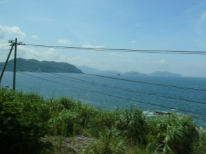
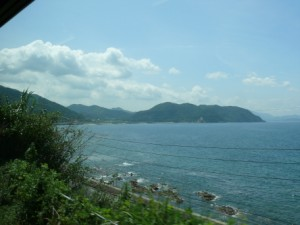
We saw a number of islands, small and big, in the landscape, and we soon learned we were parting from the San-in region and arriving at the other side of Japan, the San-yo region. It was about a three-hour ride.
——Shimonoseki City——
Shimonoseki is at the western end of the main island. It’s Kyushu across the Kanmon Straits.
Someday we’ll visit the Kyusu Island, taking that bridge! (Kanmonkyo Bridge)
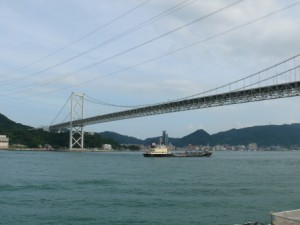
At the Kanmon Straits there are many boats and ships coming and going. “It looks very busy and very active,” my husband said, who comes from another famous port, Marseille.

Shimonoseki also has a nickname, “Fugu Capital“, a capital of pufferfish or blowfish. The city is number one in the number of catches of fugu in Japan.
Fugu is known to be lethally poisonous, but the fugu cuisine is very popular in Japan. We saw many restaurants specializing in fugu, especially in Shimonoseki City. Although the preparation of fugu at a restaurant is strictly controlled by the law, we see occasionally news that some people get sick or die because they prepare it at home. Only licensed chefs are allowed to cook this poisonous fish.
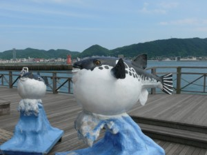
Shunpanro (photo below) is the first restaurant specializing in fugu in Japan.
History of the fugu cuisine:
The Tokugawa shogunate (1603 – 1868) banned the consumption of fugu in Edo, and even in the Meiji period the government warned the public not to eat fugu. However, in 1888, Ito Hirobumi (1841–1909), who attended Shoin School in his early years and became the first prime minister of Japan, had a fugu dish at Shunpanro, a Japanese-style restaurant hotel, and he admired the taste. Thanks to his promotion of the fugu cuisine in Yamaguchi, eating fugu was allowed.
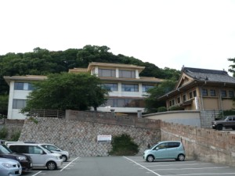
Soon after we checked in at a hotel and left our baggage, we took a bus to Karato District, where you can expect good shopping! It’s like a small shopping mall, and many restaurants stand side by side. Reasonable, too.
Restaurant Karatoya: We had excellent kaisendon, a seafood bowl, at Karatoya. My husband was really satisfied with this trip, because almost every day it was seafood … he can’t find such a dish in France…
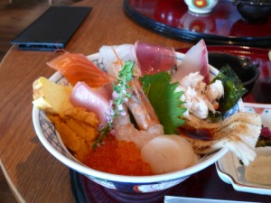
After we looked around the souvenir shops, we, then, headed for Karato Sanbashi (Karato Pier) to take a ferry boat to Ganryu-jima, a small island in the sea located between the main island and the Kyushu Island.
On this island, a famous swordsman duel took place.
In 1612, Miyamoto Musashi, an expert swordsman, fought his duel with Sasaki Kojiro, a celebrated samurai using a large two-handed Japanese sword, Nodachi(1m long).
Musashi arrived late in a small boat, while Kojiro was impatiently waiting. Musashi used, in this duel, a sward made of wood, called Bokken, and soon the fight was over. Musashi defeated Kojiro.
We say that his victory was due to his late arrival which unnerved Kojiro.
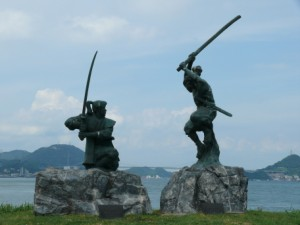
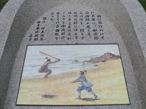
Here is the boat on which Musashi arrived at this island!!!
No, it’s just a decoration.
Why don’t you take a photo with it? The view around this island is also excellent. I recommend visiting Ganryu-jima if you have time.
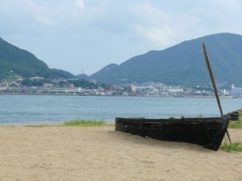
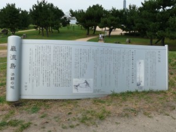
We stayed on the island about one hour and went back to Karato. Then we walked a few minutes to visit Akama-jingu Shrine.

Akama-jingu Shrine is dedicated to Emperor Antoku, who died at the age of seven when the Battle of Dan-no-Ura occurred nearby in 1185.
At that time, two family clans were fighting to get control of Japan: the Minamoto clan and the Taira clan. At the beginning the Taira clan had big power in politics and they promoted Antoku to take the throne at age three, whose mother was the daughter of Taira no Kiyomori.
When the Taira, who had close relation ties with the imperial family, was defeated, Emperor Antoku was taken and plunged into the water in the Shimonoseki Staraits, being nestled in his grandmother’s arms. This was to avoid humiliation of being captured by the opposing forces.
The young emperor died in the belief that even in the deep sea there would be a palace where he could live. This is why this Sea God’s Palace was built to console his spirit.
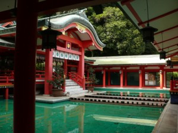
A little away from the shrine, you’ll find a monument for the Battle of Dan-no-Ura at Mimosumogawa Park.
Minamoto no Yoshitsune (above) and Taira no Tomomori (below)
After this battle, the Minamoto clan prospered at Kamakura (present-day Kamakura City, Kanagawa prefecture), and Minamoto no Yoritomo, Yoshitsune’s brother, became the first shogun of the Kamakura Shogunate (1192 – 1333), independent of the imperial power.
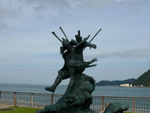
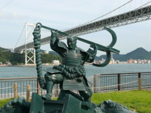
Near this monument, there are also some replicas of cannons.
Do you remember the story I wrote on the page for Hagi City? Shimonoseki is also known as the place where Takasugi Shinsaku was fighting against the western countries. These canons were used to drive them out.
Joint naval forces from Great Britain, France, the Nehterlands and the United States against the feudal domain of Choshu. How brave Choshu people were!


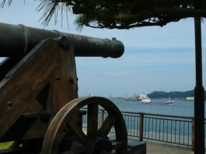
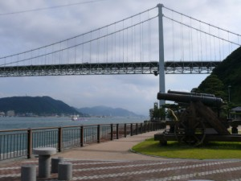
Last, I’ll introduce a small shrine called Ootoshi-jinja.
Before the Dan-no-Ura Battle, Minamoto no Yoshitsune visited this shrine to pray for victory.
I bought an amulet calling victory! I don’t know what I want to win, but I feel stronger now!!!
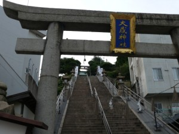
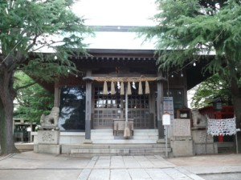
Shimonoseki is not so big, but many sites to visit. So much history. I think I need to study more… My husband also found a lot of interest in Japanese history during this trip.
But our trip continues…
Shimonoseki Tourist Information (Japanese)